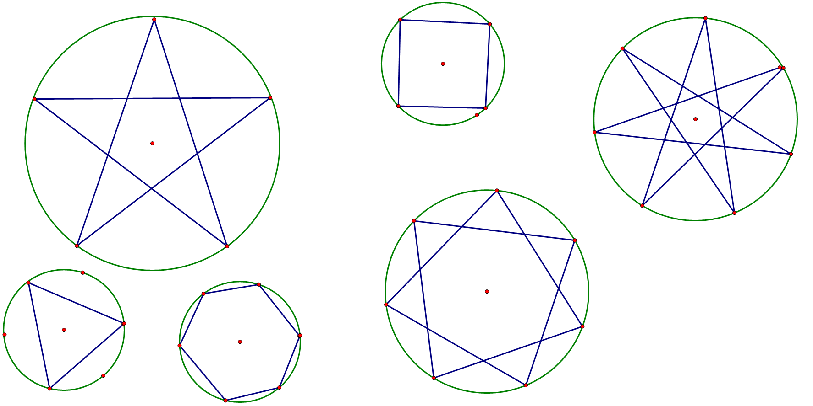

atcoder的题解好像有点少……
去刷51nod吧，好像很多是翻译成中文的原题
感觉思维难度还是不错的
1 1051 最大子矩阵和
9.25 难度1
二维版，套个一维的+前缀和就好了
2 1020 逆序排列 HAOI2009 逆序对数列
9.25 难度1
$f(n,k)=\sum_{i=0}^{n-1} f(n-1,k-i)$
不能开ll，会被卡空间
然后为了方便可以相邻做差，具体看代码
upd：这题有$O(k\sqrt k)$做法，见#6077. 「2017 山东一轮集训 Day7」逆序对，我写了题解
|
|
3 1674 区间的价值 V2
9.25 难度1
枚举每个l，然后向右看，计算贡献
分开来考虑每个位，对于and只关心第一个1，or只关心or
那么可以统计每个位的贡献，分成两部分的权值，最多共有60个不同的断点
那么排序一下就好了，差分统计贡献
我真的好菜啊上一道题的maxn忘记改了……
4 1675 序列变换
9.26 难度2
莫反显然，但我发现我不会计算条件2……
看题解，原来用个桶就好了，根据调和级数是log的
5 1682 中位数计数
9.26 难度2
又是巧妙地用桶，套路地转化为-1和1，然后找和为0
6 1686 第K大区间
9.26 难度2
我不会二分了怎么办…… i am the king
7 1052 最大M子段和
9.26 难度1
显然的dp
前缀和mx优化一下就好了
8 1120 机器人走方格 V3
9.26 难度2
卡特兰数裸题
9 1555 布丁怪
9.29 难度2
本来以为这是一道找性质题，然后想了个错误的性质，就凉了……
首先不难想到，问题会转化成，求一个序列的某一段，其中每个数都出现且仅出现一次，并且连续覆盖
本来想着可能可以用什么巧妙的技巧去判断bitset中连续的1，但没什么想法……
正解是转化为区间极值，让极值的差和长度差相同
log方的话显然线段树
但也可以分治，每一层，处理l和r不在相同区间的问题
这个极值挺麻烦的，用分情况讨论可以简化
一、min和max都在左边，此时计算一下前缀后缀与mid的极值即可快速计算
二、min在左边，max在右边，此时需要用两个尺取法，同时维护，并用桶维护公共区间
另外的两种情况是镜像问题，可以通过 「翻转序列+调整mid」 简化代码复杂度
10 1125 交换机器的最小代价
10.1 难度2
每个位置向它想去的点连边，那么因为每个点出度和入度都是1，一定是若干个环组成的
对于每个环，有两种策略
一、用内部最小的节点逛一圈
二、用外部最小的节点逛一圈再回去
|
|
11 1131 覆盖数字的数量
10.1 难度2
根据 $num\%a \leq b-a+1$ 可知能表示的区间一定是用 $ka \to kb$ 组成的
然后当k达到一定大小后，后面都会重叠，所以二分k，前面等差数列，后面连续
打这个细节多到吃屎……
12 1189 阶乘分数
10.3 难度2
bzoj2721
感觉我不可能想到……
$n!(x+y)=xy,x>n!,y>n!$
$y=n!+z$
$x=\frac{(n!)^2}{z} + n!$
$ans=(n!)^2 的约数$
那么筛一下最小质因子，套个公式就好了
13 1201 整数划分
10.16 难度2
好像又被套路了
感觉这种思路非常难想
主要是因为互不相同，你可以维护一个相对大小关系，这个关系一定是从1开始的
然后经过一系列的整体增加1得到当前的方案
那么现在dp，要么群体加1，要么群体加1然后前面插入一个1，总是能保证互不相同的
14 1215 数组的宽度
10.16 难度2
被lxj锤爆了，只会分治的nlogn做法
处理出min和max下，每个数能覆盖的范围
然后式子是可以拆开来的，min和max拆开统计就行了
15 1217 Minimum Modular CF303C
10.16 难度2
感觉这题有点难度
考虑相等的二元组， $a_i=a_j (\% m)$
如果枚举每个m，那么他们的差一定是m的倍数（包括0）
那么如果存储差，通过枚举m的倍数，就能得到所有的数对，而且是mlogm的
注意到k很小，数对显然不会超过 $k(k+1)/2$ 对，是很强力的剪枝
对于每一种实际的余数，第一个不需要删除，可以用链表拿出所有点对，进行计算
该做法的复杂度是有保证的，但常数略大，很容易被暴力枚举n的做法吊锤，而且还被卡空间……
故本代码暂时没ac，但一定是正确的
16 1241 特殊的排序
10.16 难度2
非常妙的思维题
答案是，保留一段值连续数列，其他的一定存在一种方案，移动到左边或者右边
所以线性dp一下就好了
17 1259 整数划分 V2
10.16 难度2
因为可以相同，数的数量会达到n
可以巧妙地分块
- 只用1~T的数， $g(num)=\sum g(num-a)$
- 用后面的数，那么这个部分，数的数量会在n/T以内，
那么又可以用前面的做法了，不过不在需要保证互不相同了，在插入一个T+1的时候，其他不需要增加
$f(i,num)=f(i-1,num-(T+1)),f(i,num-i)$
答案就是其卷积12345678910111213141516171819const int MAX_N=51000;const ll MOD=1e9+7;ll g[MAX_N],f[320][MAX_N];void main(){int n;scanf("%d",&n);int T=sqrt(n);g[0]=1;for(int a=1;a<=T;a++)for(int num=a;num<=n;num++)g[num]=(g[num]+g[num-a])%MOD;f[0][0]=1;for(int i=1;i<=n/T;i++)for(int num=i*(T+1);num<=n;num++)f[i][num]=(f[i][num-i]+f[i-1][num-(T+1)])%MOD;int ans=0;for(int a=0;a<=n;a++) for(int i=0;i<=n/T;i++) (ans+=g[a]*f[i][n-a]%MOD)%=MOD;printf("%d",ans);}
18 1262 扔球
10.16 难度1

其实画这个图的途中，想了很多东西，最后的结论只和左下角那个反例有关
那就是你必须经过这n+1个点！
那画图的时候，我枚举了一个跨度，这也是灵感的来源
这个跨度必须和n+1互质，用公式求一下欧拉函数即可
ans=phi(n+1)
19 1273 旅行计划
10.17 难度2
我的思路，下限nlogn：
维护一个线段树表示，以dfs序为编号，每个点到根的距离
然后动态选取最大的那个，把这条链并到根节点，合并的途中影响的总是子树整体，dfs序上是连续的
然后每个节点只会被合并一次，所以是nlogn
正解，下限n：
显然选择的点总是叶子节点，每个节点只会被一个叶子节点覆盖，
父亲节点被覆盖的候选总是在儿子节点中产生，dfs回溯的时候处理即可
最后再把叶子排序即可
20 1274 最长递增路径
10.17 难度2
性质1： 一条边最多经过1次
性质2：路径上边权严格递增
将每条边排序，然后加入图中，此时一定是路径的最后一条（严格递增），没有后效性，可以直接转移
（但为了保证严格单调，需要将同权值的边分组，滚动一下即可）
21 1277 字符串中的最大值
10.17 难度2
kmp
$f(nxt[i])+=f(i)$
22 1293 球与切换器
10.17 难度2
这是一道sb题，但我也是个sb……
唯一提示：可以看作所有球同时放进去
23 1296 有限制的排列
10.17 难度2
显然先拆开，变成每个位置，和前面的大小关系
然后我就卡住了，不知道怎么解决，必须是排列这个条件
然后好像这是一个套路？
dp的时候保证f(i)是大小为i的排列，时刻保证合法性，
然后插入一个数的话可以把前面>=num的部分整体+1
24 1322 关于树的函数
10.18 难度2
一道sb题，但我这sb又没想到
唯一提示：
||A1|B1|
|:-:|:-:|:-:|
|A2|a|b|
|B2|c|d|
a+b=a+c=b+d=c+d=n
25 1328 比赛往事
10.18 难度2
这道题ac人数极少，我想写一发网上第一篇正式题解（思路主要是自己想的，少量参考了出题人的口胡）
题目的性质：确定一些位置后，内部元素是可以任意交换的
抓住这个性质，先定位出所有非法的位置，他们一定是要操作的
对于每次固定位置后，最优策略一定是a和b分别排序
如果合法了，直接退出，否则利用其它元素进行修正
维护好一个非法集合，那么里面每个元素迟早要被再次替换
我们每次选取最大的那个place，外面能参与进来的一定是 $cutoff \geq place$
在可参与的集合中，显然应该选择最小的那个place，加入后产生了推移
循环地执行此操作即可，最多加入n次，内部要排序一下，所以时间复杂度是 $O(n^2logn)$ （当然你非要写个插入排序也行）
下来我们讨论一些细节：
- 是否有可能找出来的a，无法使整个串推移呢？答：其实这是个无解情况，break否随你
- 不选取最小a行不行？答：可能可以，但这样显然不会更差
|
|
26 1353 树
10.18 难度2
$f(x,siz=1 \to siz_x)=f(x,siz-a) \times f(y,a)+f(x,siz) \times f(y,k \to siz_y)$
27 1354 选数字
10.18 难度1
离散化约数，做个乘法背包即可
28 1378 夹克老爷的愤怒
10.22 难度2
贪心+树形dp
仅当必须要放的时候再放
比「救火站」简单一点（自行搜索blog）
29 1379 索函数
10.23 难度2
前置知识：
- 斐波那契通项公式： $\frac{1}{\sqrt 5} [ (\frac{1+\sqrt 5}{2})^n-(\frac{1-\sqrt 5}{2})^n ]$
- num在二进制下的位数为 $\lfloor log_2 num \rfloor +1$
然后经过打表、感性理解可知， $Sor(n)=2^{Fib(n)的位数}-1$
小证明：斐波那契数列的每个1，因为是不断加法得到的，显然一定是通过后一个位的两个1组成的，
根据数学归纳法可知，该性质成立
当n=0，输出0
当n比较大时，后面的部分趋近于0
n较小时暴力计算
30 1383 整数分解为2的幂
10.23 难度1
方法一：
$f(num,k)$ 表示num这个数，最大为 $2^k$ 的方案计数
$f(num,k)=\sum_{i=0}^k f(num-2^k,i)$
前缀和优化后，时间 $O(nlogn)$
方法二：
$f(num)=f(num-1)+[num是偶数] \times f(num/2)$
31 1423 最大二“货”
10.23 难度2
思路从一开始就是错误的
枚举每个数作为最大值的贡献，那么找次大值会很麻烦，还曾考虑可持久化字典树什么的……
但其实用次大值找最大值就好了……单调栈一下就没了……